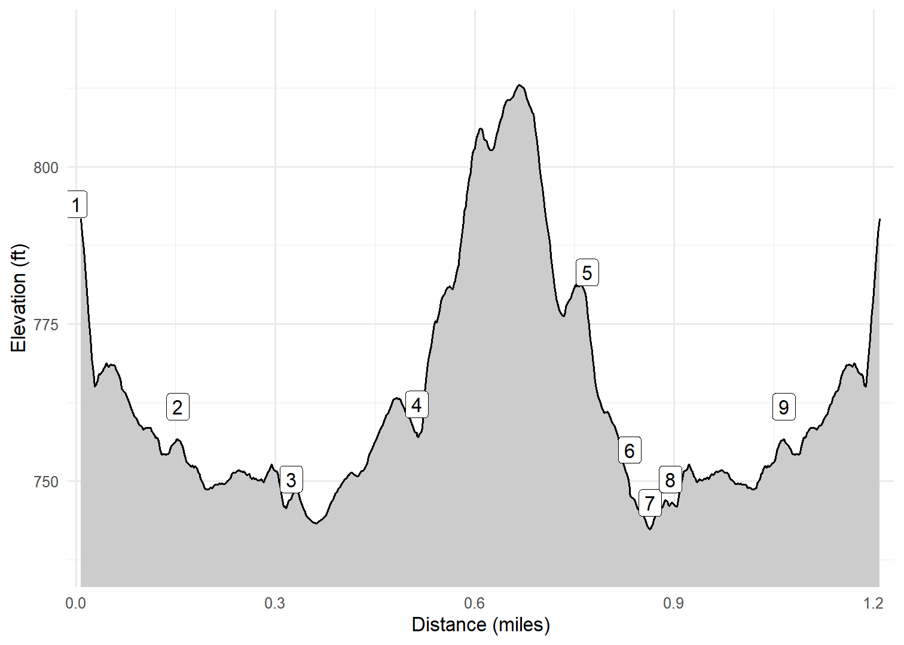

Osborne County Park
Visitor Center and River Trail
Cash and I walked from the Osborne Nature Center parking area along the Volga River, returning mostly along a ridge above the river. The trail was short, but nice. We could not walk some of the trails on this side of the river as they went through a wildlife viewing area that prohibited pets. It was a warm March day (83F), with some kids playing in the river!
Walk-Specific Map
Take Note
- Click on a segment to get specific information.
- Numeric labels correspond to the same labels in the elevation profile and summary information below.
Elevation Profile

Images

IAOSBS02: Typical scenery Winter 2025

IAOSBS03: Typical scenery Winter 2025

IAOSBS05: Typical scenery Winter 2025
GPX Download
A sanitized GPX file of our hike is here.
Summary Information
| NUM | trackID | Primary | Description | Type | Distance | CumDist | DeltaElev |
|---|---|---|---|---|---|---|---|
| 1 | IAOSBS01 | Osborne Park South | Visitor Center parking area to | Trail | 0.15 | 0.15 | -32 |
| 2 | IAOSBS02 | Osborne Park South | to | Trail | 0.17 | 0.32 | -12 |
| 3 | IAOSBS03 | Osborne Park South | to | Trail | 0.19 | 0.51 | 12 |
| 4 | IAOSBS05 | Osborne Park South | to | Trail | 0.26 | 0.77 | 25 |
| 5 | IAOSBS04 | Osborne Park South | to | Trail | 0.06 | 0.83 | -28 |
| 6 | IAOSBS09 | Osborne Park South | to Volga River | Trail | 0.03 | 0.86 | -8 |
| 7 | IAOSBS09 | Osborne Park South | Volga River to | Trail | 0.03 | 0.89 | 8 |
| 8 | IAOSBS02 | Osborne Park South | to | Trail | 0.17 | 1.06 | 12 |
| 9 | IAOSBS01 | Osborne Park South | to Visitor Center parking area | Trail | 0.15 | 1.22 | 32 |